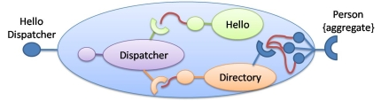
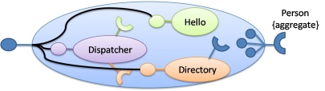

Introduction
iPOJO is an extensible, service-oriented component model implemented on the top of the OSGi framework that aims to simplify the development of OSGi™ applications. iPOJO follows a POJO-based component approach using external metadata to describe how POJO components should be managed by the iPOJO runtime. Some of the standard features of iPOJO include automatic service dependency management, service publication, and configuration property injection.
Another feature of iPOJO is component factories. As stated previously, an iPOJO component is described by its metadata. In iPOJO, the metadata describes a component type. For each component type, iPOJO registers a factory service that can be used to create instances of the component type described by the metadata.
In addition to these features, iPOJO also provides a service-oriented composition model. iPOJO's composition model tries to merge:
- Component-based composition and
- Dynamic service flexibility.
This document presents iPOJO's hierarchical service composition concepts and a simple example to illustrate them.
Motivation
Component composition occurs in two fashions:
- Horizontal composition: A provided interface from one component instance is bound to corresponding required interface of another component instance.
- Vertical composition: Component instances are contained inside of another component instance.
Typically, at runtime, a component composition is an unmodifiable set of connected component instances. The main motivation of iPOJO is to remove this limitation and introduce a more dynamic and flexible approach. iPOJO achieves its goals by applying service-oriented concepts to component orientation. Dynamic horizontal composition is supported by iPOJO's dependency injection mechanism described elsewhere (How to write your own handler) and dynamic vertical composition is supported by iPOJO's hierarchical composition mechanism described below.
iPOJO hierarchical composition tries to merge component composition and dynamic service flexibility to allow:
- Run-time/late binding.
- Service run-time dynamics.
- Implementation evolution.
The result is a flexible, yet easy-to-use service-oriented component model.
Hierachical Service Composition
iPOJO essentially provides a kind of service-oriented architecture definition language (ADL). This service-oriented ADL allows you to define composite components. The main differences between a traditional component-oriented composite and an iPOJO composite is that the iPOJO composite's constituent entities are described in terms of abstract service interfaces instead of specific component types/instances and bindings are inferred from dependency metadata data rather than explicitly declared. This approach means that composite components in iPOJO are not concrete component implementations; rather, they are abstract implementations whose precise implementation selection is deferred until run time.
Unlike a POJO component in iPOJO that has code associated with it, a composite component is completely described by its metadata. Similar to a POJO component, however, the metadata describes a component type for which iPOJO registers a factory service that can be used to create instances of the composite component.
A composite can be thought of as a service registry or a scoping mechanism of the global OSGi™ service registry. Composites can contain other composite, creating a hierarchy of service registries. The OSGi™ service registry is the root composite.
A composite can:
- Contain services.
- Require services from its parent composite.
- Provide services to its parent composite.
A service contained in a composite is a sub-service, which is isomorphic to sub-components in traditional component-oriented composites. A sub-service is a service instance created from a component factory. Sub-services are not visible outside of the composite and can only see other services that reside in the composite service registry. The set of services in the composite service registry are all sub-services as well as all required services. Sub-services are not aware of the fact that they are inside of a composite and provide and use services normally within their composite.
"Hello World" Composite
This section describes a simple composite example that requires an aggregated set of services from the parent composite, contains 3 sub-services, and provides one service to the parent composite.
The "Killer" Application
To illustrate composite we design a "Hello World" application named HelloComposition. This composite offers a service for dispatching a "Hello" message to each person listed in a Directory service. Each person is published as a service and is used by the composition to get the name of the person in order to write the message.
The composite provides the HelloDispatcher service:
public interface HelloDispatcher { public void dispatch(); public String getLanguage(); public List<Person> getPersons(); }
The next section describes the abstract composite implementation.
Composite Design
To implement this composite, we reuse existing service implementations;we have three off-the-shelf services:
- Hello service: Returns a "Hello" message in a particular language.
- Directory service: Aggregates Person services.
- Dispatch service: Requires Hello and Directory services to dispatch a "Hello" message to each person contained in the Directory.
The following code snippet shows the Hello service interface:public interface Hello { public void hello(String name); public String getLanguage(); }
The following code snippet shows the Directory service interface:
public interface Directory { public Person getPerson(String name); public List<Person> getPersons(); public void addPerson(String name, String address); public void removePerson(String name); }
The following code snippet shows the Person service interface:
public interface Person { public String getName(); public String getAddress(); }
The following code snippet shows the Dispatch service interface:
public interface Dispatcher { public void dispatch(); }
These services define the overall abstract implementation of the composite.
Composite Description
To describe our composite, we use the iPOJO service-oriented ADL:
<composite name="HelloComposition"> <requires specification="org.apache.felix.ipojo.composition.ex1.person.Person" aggregate="true"/> <service specification="org.apache.felix.ipojo.composition.ex1.hello.Hello"/> <service specification="org.apache.felix.ipojo.composition.ex1.say.Dispatcher"/> <service specification="org.apache.felix.ipojo.composition.ex1.directory.Directory"/> <provides specification="org.apache.felix.ipojo.composition.ex1.compo.HelloDispatcher"/> </composite>
The composite is described in term of service specification, resulting in an abstract component implementation; it declares:
- An requirement for all available Person services from the parent composite.
- Sub-services for Hello, Dispatcher, and Directory services.
- A provided HelloDispatcher service to the parent composite.
When this composite is instantiated, all Person services from the parent composite are made available in the composite service registry and instances of the Hello, Dispatcher, and Directory are created from available factory services and their corresponding services are published in the composite service registry. The provided HelloDispatcher service is based on method delagation to sub-service specifications as depicted in the following image:
The delegation of HelloDispatcher service methods to sub-service methods is automatically performed by iPOJO based on method name and method parameter matching.
Composite Description Future Work
The composite description presented here does not entirely conform to the ideal model proposed in the earlier sections of this document. Specifically, while the composite is defined in terms of services, the composition as described only really makes sense if we were aware of implementation-specific dependencies of the eventual Dispatcher component type. In other words, for us to choose the Hello and Directory sub-services, we had to know that the eventual implementation of the Dispatcher sub-service would have dependencies on these other sub-services. Unfortunately, this violates the goal of iPOJO to define composites purely in terms of abstract services.
The main reason for this limitation is that OSGi service specifications are comprised of only two parts:
- A human-readable document.
- A Java service interface definition.
To realize iPOJO, OSGi service specifications must be extended to contain other information. For example, services must be able to declare specification-level dependencies on other services. Services with specification-level dependencies are referred to as composable services, since it is possible to compose them with other service. In the core OSGi framework, all service dependencies are at the implementation level, thus only component instances are composable.
Composable services are interesting because they make it possible to define services with parameterized behavior or algorithms. For example, a service to select something from a table could have a specification-level dependency on a sorting service, so that sort order is configurable externally. It might appear as if such a scenario were possible with standard OSGi services, but it is not possible unless you make assumptions about the component implementations.
For example, in standard OSGi if component implementation A provides service Foo and requires service Bar, it is not possible to know whether component implementation B, which also provides Foo and requires Bar, uses Bar for the same purpose as A. Composable services makes this possible, since the purpose of such service dependencies can be defined in the service specification. The resulting model obeys two levels of service dependencies:
- Specification-level dependencies: Dependencies that are imposed on all implementations and whose purpose is well defined.
- Implementation-level dependencies: Dependencies that are arbitrarily selected by the component developer for a specific component implementation and whose purpose is unknown.
As part of the ongoing work of iPOJO, specification-level dependencies (as well as other service specification improvements) will be introduced to the iPOJO model to further refine its service-oriented component model. Using the current example as an illustration, the current approach under investigation for specification-level dependencies looks like this:
Packaging
A composite component type is described in the metadata.xml file of an iPOJO bundle which means that iPOJO creates a factory service for the composite, like all iPOJO components. Also like all iPOJO components, it is possible to create an instance of the composite in the metadata file by declaring an instance, such as:
<instance component="HelloComposition" name="hello-composition"/>
Run Time
Imagine at run time you have:
- Two factories that can create Hello service provider instances.
- A factory that can create Dispatcher service provider instances.
- A factory that can create Directory service provider instances.
- Several existing Person service instances.
When you deploy the example composition and create an instance of it, all aspects of it are automatically managed by iPOJO:
- All available Person services from the parent composite are imported into the composite.
- One Hello service provider, one Directory service provider, and one Dispatcher service provider are instantiated inside the composite.
- The HelloDispatcher service method calls are wired to the constituent sub-services and it is provided into the parent composite.
If the factory which creates the Hello provider disappears (i.e., its instances become invalid), the composite will automatically switch to the second one to validate the composite service. If the second Hello provider disappears too, then the composite will be invalidated (i.e., the provided service will be revoked) and it will wait for new factory providing Hello service instances, which may themselves also be composite implementations.
When a Person service appears in the parent composite, it is automatically inserted into the composite. Likewise, if a Person service disappears from the parent composite, it is automatically removed from the composite.
A flash demo of this composition is available.
Composite Concepts and Features
The following subsections define the various concepts and features of iPOJO's composite components.
Service Requirement
The composite can require services from the parent composite. Each requirement is describe by an <requires> element in the composite description. An imported service must specify the target service specification. Additionally, required sub-services can specify:
- Cardinality: Indicates whether a single provider instance is imported or an aggregated set of the available providers instances is imported.
- Optionality: Indicates whether the imported sub-service is optional or mandatory.
- Filtering: Indicates how the services available in the parent composite can be further filtered using an LDAP expression evaluated over their service properties.
<requires specification="org.apache.felix.ipojo.test.scenarios.service.Hello" optional="true" aggregate="true" filter="(language=en)"/>
Service Provisioning
The composite can provide services to its parent composite. Each provided service is described by a <provides> element in the composite description. A provide service must specify provided service specification.
Service provision is realized by delegating method invocations on the service interface to methods on the sub-service instances contained in the composition. A delegation mapping is automatically created by matching method names and arguments types. If a delegation mapping cannot be determined, the composition is invalidated.
Service specifications can also declare certain methods as optional in the service interface; this is done by declaring that a method throws an UnsupportedOperationException. Optional methods need not have a mapping for delegation purposes. If a non-optional service method does not have a mapping for delegation, then a warning message is issued.
<provides specification="org.apache.felix.ipojo.composition.ex1.service.HelloDispatcher"/>
Sub-Service Instantiation
A composite can contain sub-services, which result in private service instances at run time. The composite will track factories able to create targeted specification providers. The created service instances are accessible only inside the composite. Sub-service instances may also be composites. Each sub-service to instantiate is represented in the composite description by a <service> element. The sub-services must specify the desired service specification for the sub-service. Additionally, the sub-service may specify:
- Cardinality: Indicates whether a single provider instance is created or an aggregated set of the available provider instances is imported.
- Optionality: Indicates whether the created sub-service instance is optional or mandatory.
- Filtering: Indicates how the service factories available in the parent composite can be further filtered using an LDAP expression evaluated over their service properties.
- Configuration: Indicates the configuration to inject in the created instances.
<composite name="composite.bar "> <service specification="org.apache.felix.ipojo.test.scenarios.service.Hello"> <property name="language" value="en"/> </service> </composite>
Instance injection
A composite can contain instances. These instances does not need to provide any service and are identified by their component types. The composite will track the corresponding factories and create the instances. The instances are accessible only inside the composite and their service requirements are resolved inside the composite too. Each instance to instantiate is represented in the composite description by a <instance> element. The instance can specify the desired configuration. The following code snippet will inject an instance of the Hello factory with the configuration : language=en.
<composite name="composite.bar "> <instance component="Hello"> <property name="language" value="en"/> </instance> </composite>
Instance injection can be use for front end. However, these instances can be used to help a composite to provide a service (despite the instance does not provide a service). Indeed, these instances can be used as glue code to provide a service, containing method implementations of the provided service. For example, in the previous instance we had a Dispatcher service dispatching Hello message to Persons. Instead of this sub-service it is possible to inject in instance containing the dispatch method with a customized dispatching algorithm. A glue code instance can require services as any other iPOJO component.
<composite name="HelloComposition"> <requires specification="org.apache.felix.ipojo.composition.ex1.person.Person" aggregate="true"/> <service specification="org.apache.felix.ipojo.composition.ex1.hello.Hello"/> <service specification="org.apache.felix.ipojo.composition.ex1.directory.Directory"/> <instance component="MyDispatcher"/> <provides specification="org.apache.felix.ipojo.composition.ex1.compo.HelloDispatcher"/> </composite>
Note: To use instances as glue code be sure that your bundle, containing your composite, imports the implementation of the component type. Moreover, the factory allowing to create the instance must be available when starting your bundle to compute correctly the delegation mapping.
Architecture
iPOJO composites can expose their internal architecture for reflection. This can be useful, for example, when debugging to understand why a given composite is currently invalid, such as when a given import cannot be satisfied. For a composite to expose its internal architecture, it must set the architecture flag, such as:
<composite name="composite.bar " architecture="true"> <service specification="org.apache.felix.ipojo.test.scenarios.service.Hello"> <property name="language" value="en"/> </service> </composite>
With this flag set, iPOJO publishes an architecture service for the composite. The architecture of the composite can be examined using the "arch" shell command for Felix.
Composition Model Extensibility
Like the rest of iPOJO, the composition model is extensible. The composite container is composed of a "composite handler", which is a special handler designed to support composite components. More documentation to come on this feature.